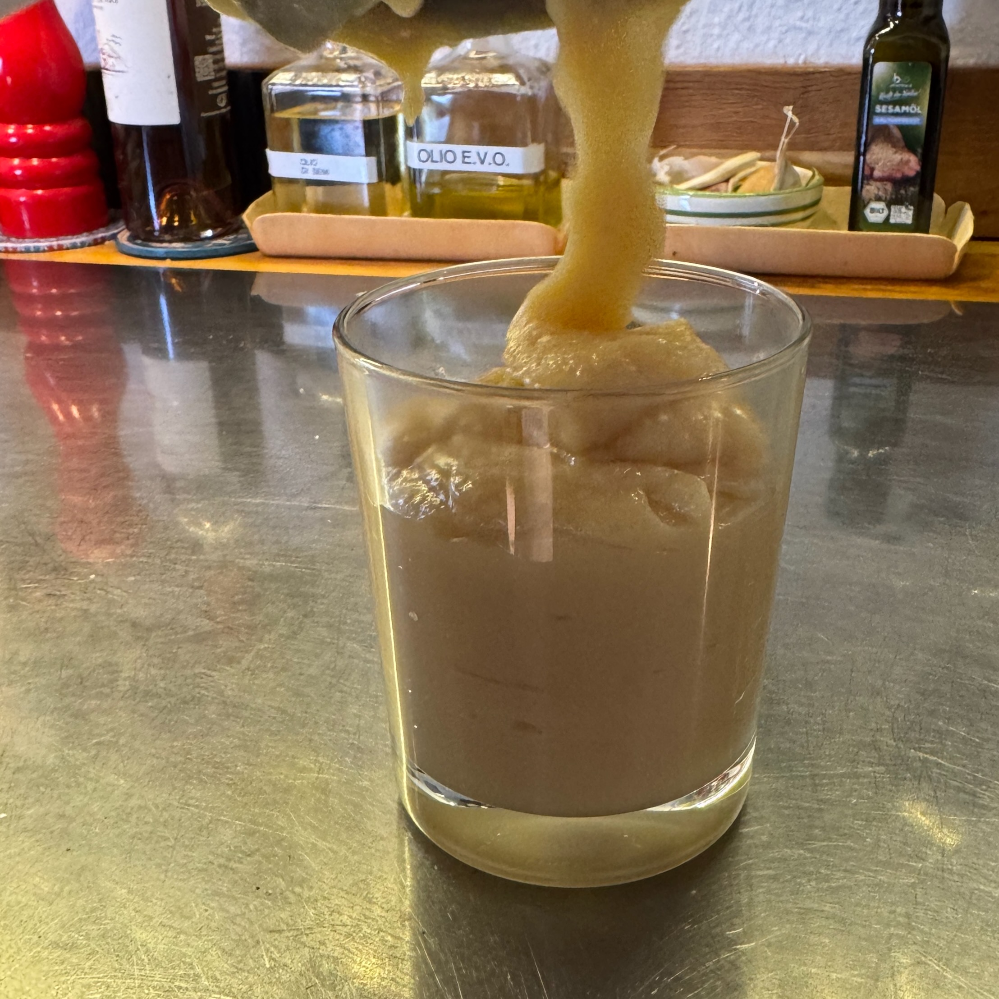

Dulce de leche (la mou) con il Bimby

La crema mou da spalmare sul pane o da versare su gelato, waffel o pancakes.
üßæ Ingredients
- 1 l Latte
- 250 g Zucchero
- opzionale i semi di una bacca di vaniglia
üë©‚Äçüç≥ Directions
- Inserire tutti gli ingredienti nel barattolo del Bimby
- Varoma, 1h, Vel. 4
üí° Tips
Dopo un’ora controllare densità (in un piattino per raffreddarla) e il colore (dovrebbe caramellare un po’).